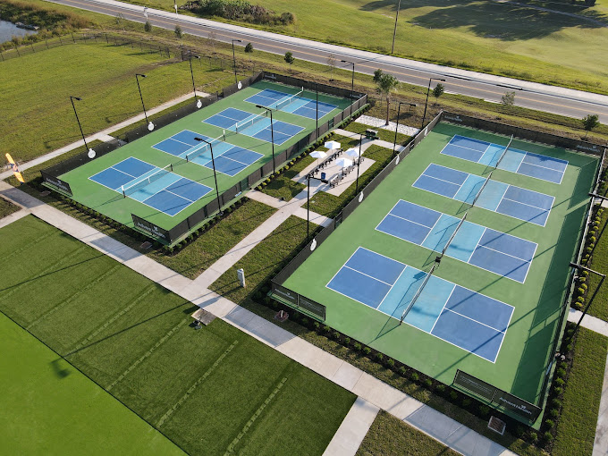
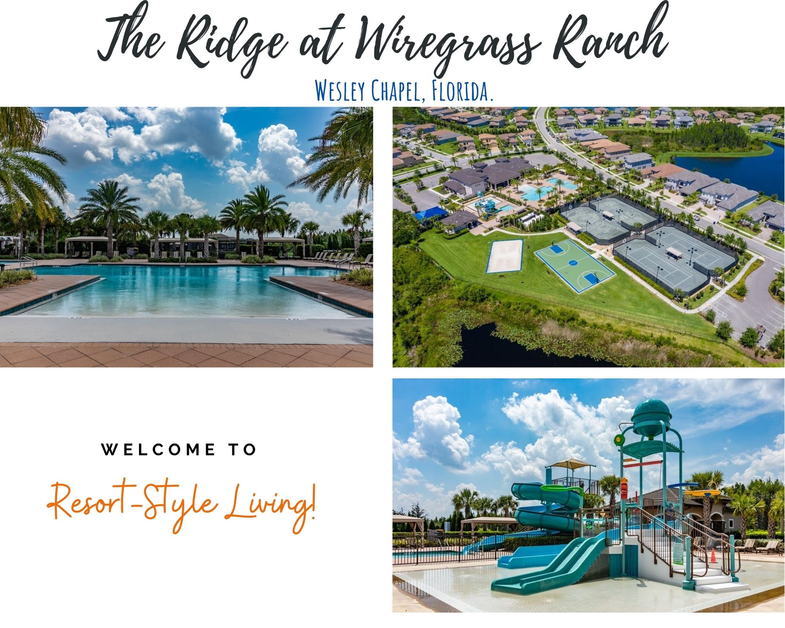
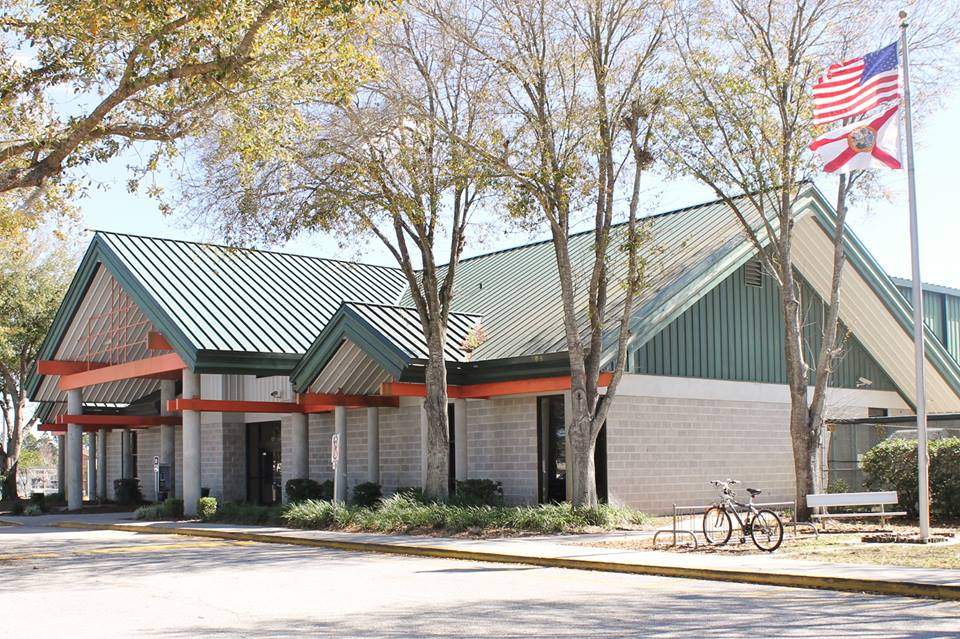

Sarah Vande Berg Academy / Mouratoglou Academy

Located in Zephyrhills, the Sarah Vande Berg Tennis Academy / Mouratoglou Academy offers state-of-the-art facilities for aspiring tennis players. Our programs here include beginner classes, intermediate drills, and advanced performance training. Private lessons and junior programs are also available to cater to all skill levels.
Visit their official website for more details about the location.
The Ridge at Wiregrass Ranch

In Wesley Chapel, The Ridge at Wiregrass Ranch community provides a scenic and family-friendly environment for tennis and pickleball enthusiasts. Programs here include cardio tennis, family sessions, and weekend clinics. This location is perfect for recreational players and those looking to enhance their skills in a relaxed setting.
Land O' Lakes Recreation Complex

The Land O' Lakes Recreation Complex is an ideal setting for players of all ages. Here, we offer beginner clinics, summer camps, and competitive match play sessions. Our experienced coaches provide personalized instruction to help players achieve their goals.
Check out their official site for additional information about the complex.